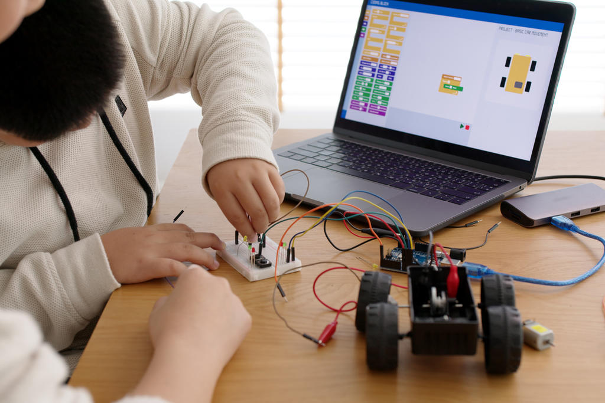

A robótica como incentivo à aprendizagem
Porque usar a robótica da educação?
A robótica educativa possibilita e melhora o processo de
ensino-aprendizagem são ferramentas que consistem na aprendizagem por meio da
montagem de sistemas constituídos por partes mecânicas e lógicas. Ou seja, os
componentes de parte física, que podem ser, de plástico, madeira, MDF ou até
mesmo reutilizar materiais de descarte.
E também a linguagem de programação, que é usada para conferir comandos
de ações, como ligar e desligar, ir para frente e para trás, etc. Esses dispositivos
passam a ser, na verdade, artefatos cognitivos que promovem a interação, a troca
de idéias e a construção do conhecimento coletivo.

Portanto, a robótica tem grande aplicação em diversas áreas, desde a
produção industrial, até atividades domésticas. Por isso, é relevante para educação
propiciar esses momentos aos alunos, e dar eles a possibilidade de reflexão e
recriação destes sistemas, de forma a melhorar e até mesmo recriar novos
dispositivos que podem ser usados no dia-a-dia. Desde a Primeira Revolução
Industrial, robôs e outros equipamentos são utilizados para aumentar a
produtividade das empresas. Uma parte interessante da robótica educativa é dar ao
aluno condições de perceber que, muitos aparelhos que usamos no dia a dia, são
também robôs, porque usam algum tipo de programação para executar ações.
Além disso, o exercício de construção e o manejo de componentes físicos ,
chama à atenção e o interesse dos alunos para o tema da tecnologia e para o
conteúdo ensinado, assim a robótica funciona como ferramenta educativa, visto que,
dentre seus inúmeros benefícios, melhora o desenvolvimento cognitivo dos alunos e
o processo de aquisição dos conhecimentos aprendidos em sala.
Por fim, a robótica tem um caráter multidisciplinar que beneficia diversas
áreas do conhecimento, principalmente a matemática, além de naturalmente
promover o trabalho em equipe e a cooperação.
Trabalho Acadêmico, sem fins lucrativos.***